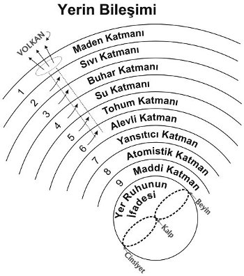

1623) Okült bilginler bile Yer’in gizemli yapısını araştırmayı, en zor problemlerden biri olarak kabul ederler. Her okült bilgin bilir ki, Arzu Âlemini ve Somut Düşünce Bölgesini ayrıntılı ve kesin olarak araştırmanın ve araştırmanın sonuçlarını Fizik Âleme getirmek, fizik gezegenimizin sırlarını bütünüyle araştırmaktan çok daha kolaydır. Zira bu ikincisini tamamiyle yapmak için kişi, dokuz küçük İnisiyasyondan ve Büyük İnisiyasyonların ilkinden geçmiş olmalıdır.
1624) Modern bilimadamları bu konu hakkında çok az bilgiye sahiptirler. Deprem fenomeni hakkındaki teorilerini durmadan değiştirirler, zira sürekli olarak önceki varsayımlarını çürüten sebepler keşfederler. Her zamanki olağanüstü dikkatleriyle onlar, Yer’in en dış tabakasını yalnızca pek az bir derinliğe kadar araştırdılar. Volkanik püskürmeleri, başka her şeyi anlamaya çalışırken yaptıkları gibi sırf mekanik bir şekilde açıklamaya çalıştılar. Onlar, Yer merkezini alevli bir fırın gibi düşündüler ve püskürmelerin, suyun Yer merkezine tesadüfen girişi ve diğer benzer yollarla oluştuğu sonucuna vardılar.
1625) Belirli bir anlamda bu teorileri bir temele sahiptir. Ancak onlar, ne bu durumda ve ne de diğer durumlarda okültist kişiye gerçek olarak görünen ruhsal sebeplere dokunamazlar. Okültist için Yer, “ölü” olmaktan çok uzaktır. Tam tersine her köşeye, her yarığa gezegenin üzerinde ve içinde değişimlere yolaçan maya olan rûh nüfuz etmiştir.
1626) Farklı kuvars türleri, metaller, çeşitli katmanların yapısı – her şeyin, maddeci araştırmacının kavrayabileceğinden çok daha büyük bir anlamı vardır. Okült bilginler için bu maddelerin diziliş yöntemi çok büyük anlama sahiptir. Diğer tüm şeylerde olduğu gibi bu konuda da okült ilim modern bilimle, fizyoloji ile anatomi arasındaki ilişkiye benzer bir ilişki içerisindedir. Anatomi, bütün detaylarıyla her kemiğin, her kasın, her bağın ve her sinirin tam yerini ve bir diğerine olan konumunu bildirir. Ancak bedenleri oluşturan kısımların kullanımının anlaşılmasına ilişkin herhangi bir anahtar vermez. Diğer yandan fizyoloji, sadece bedenin her bir kısmının konumunu ve yapısını açıklamaz, aynı zamanda onun bedendeki kullanımını da anlatır.
1627) Yer’in farklı katmanlarını ve gökteki gezegenlerin birbirlerine olan konumlarını, onların kullanımı, yaşamdaki anlamı ve Evren’deki amacını bilmeden bilmek, onların bedendeki kullanımını bilmeden sadece kemiklerin, sinirlerin vs yerlerini bilmeye benzer.
Hayvanların Sayısı
1628) Sırların çeşitli derecelerine İnisiye olmuş kişinin deneyimli durugörür bakışına Yer, tıpkı soğan gibi katman katman yapılmış görünür. Bu katmanlardan Yer’de dokuz tane vardır ve merkezi çekirdek ile toplamda on sayısına ulaşılır. Bu katmanlar İnisiye kişiye kademeli olarak açılır. Her İnisiyasyonda bir katman onun için erişilebilir hale gelir. Böylece o, dokuz küçük İnisiyasyon ile tüm katmanların ustası olur, ancak hâlâ çekirdeğin sırlarına erişememiştir.
1629) Eski tabirde bu dokuz adım “küçük Sırlar” olarak adlandırılır. Onlar yola yeni giren kişiyi bilinçli olarak kendi geçmiş evrimi ve involusyon zamanındaki varoluş faaliyeti ile ilgili her şeyden geçirirlerdi. Ki böylece o, o zamanlar bilinçsiz olarak yaptığı işin biçimini ve anlamını anlayabilsin. O, şimdiki dokuzlu yapının (üçüz beden, üçüz can ve üçüz ruh) nasıl varedildiğini, büyük yaratıcı Hiyerarşilerin nasıl bakir ruh üzerinde çalıştığını, onda Ego’yu uyandırdığını ve onun bedeni biçimlendirmesine yardım edişini ve aynı zamanda insanın, üçüz bedenden şu anda sahip olduğu bu kadar çok şeyi ruhtan çıkarabilmek için kendi gerçekleştirdiği çalışmanın nasıl olduğunu öğrenir. Adım adım küçük Sırların dokuz basamağından, Yer’in dokuz katmanından geçirilir.

Şekil 18
1630) 9 sayısı şimdiki gelişim aşamamızın temel sayısıdır. O, sistemimizde başka hiçbir sayının olmadığı kadar özel bir öneme sahiptir. 9, Âdem’in, insan aşamasına Yer Evresi’nde erişmiş olan yaşamın sayısıdır. Yunanca’da olduğu gibi İbranice’de de rakamlar yoktur, ancak herbir harfin bir sayısal değeri vardır. İbranice’de “Âdem”, “ADM” şeklinde yazılır. “A”nın değeri 1; “D”nin 4 ve “M”nin değeri de 40’dır. Eğer bunları toplarsak 1+4+4+0+9=9’u, yani Âdem’in veya insanlığın sayısını buluruz.
1631) Eğer insanın uzak geçmişte yaratımıyla ilgilenen Yaratılış Kitabı’ndan, onun gelecekte erişecekleriyle ilgilenen Vahiyler Kitabı’na dönersek insanı engelleyen canavarın sayısını 666 olarak buluruz (Esin 13:7) Buradaki rakamları toplarsak, 6+6+6= 18 ve tekrar 1+8= 9, kendisini ilerlemesinde engelleyen tüm kötülüğün kaynağı olarak yine insanlığın sayısını buluruz. Kurtarılacakların sayısına bakarsak onun sayısının 144.000 olduğunu görürüz. Yine önceki gibi toplarsak 1+4+4+000= 9, yine insanlığın sayısı... Böylece burada insanlığın toptan kurtarılacağı pratik olarak gösterilmektedir. Şimdiki evrimimizdeki ilerleme gücüne sahip olmayanların sayısı, tüm toplamla karşılaştırıldığında önemsiz bir sayıdır ve başarısızlığa uğrayan bu az sayı da kayıp değildirler, sonraki bir yaşam dalgasında ilerleyeceklerdir.
1632) Maden ve bitki bilinci gerçekte bilinçsizliktir. İlk bilinç pırıltısı Hayvan krallığında başlar. En çağdaş sınıflandırmalara göre Hayvan krallığında 13 sınıf bulunduğunu görmüştük (1909): Radyal Simetrili’lerden (Radiata) üç grup, Yumuşakçalar’dan üç grup, Eklemliler’den üç grup ve Omurgalılar’dan dört grup.
1633) Eğer insanı başlı başına bir grup olarak sayar ve insandan Tanrı’ya, bilinçli ve yaratıcı bir varlık olmaya başladığı andan itibaren onüç İnisiyasyon bulunduğunu hatırlarsak yine 9 sayısını buluruz: 13 + 1 + 13 = 27, 2 + 7 = 9.
1634) 9 sayısı aynı zamanda İsa Mesih’in yaşında da saklıdır; 33: 3 x 3 = 9 ve aynı şekilde Masonların derecelerinde de 33 bulunur. Eski zamanlarda Masonluk, daha önce de gördüğümüz gibi 9 dereceye sahipti ve küçük Sırlar için bir İnisiyasyon sistemiydi. Fakat inisiyeler çoğu kez 33 dereceden bahsetmişlerdir. Benzer şekilde Gülhaçcıların 18. derecelerinden bahsedildiğini okuruz. Ki bu derece, inisiye olmayan bir kişi için yalnızca bir perdedir. Çünkü herhangi bir küçük Sırda asla 9’dan fazla derece bulunamaz. Günümüzün Mason derecelerinde okült ritüelden çok az şey kalmıştır.
1635) Aynı zamanda hamileliğin 9 ayına da sahibiz. Bu zaman süresince insan bedeni şimdiki derecesine kadar inşa edilir. Ayrıca bedenimizde 9 tane delik de bulunmaktadır: İki göz, iki burun deliği, iki kulak, bir ağız ve iki alt delik.
1636) Gelişen insan, 9 küçük İnisiyasyondan geçtikten ve böylelikle Yer’in tüm katmanlarına erişim kazandıktan sonra, Yer’in en içine de girmek zorundadır. Bu ona, dört büyük İnisiyasyondan birincisi yoluyla açılır. Bu İnisiyasyonda o, varlığının Yer’de başlayan kısmı olan zihnin sırrını öğrenir. İlk büyük İnisiyasyona hazır olduğunda zihni, Yer Evresi sonunda tüm insanların erişeceği bir dereceye kadar gelişmiştir. Bu İnisiyasyonda ona bir sonraki aşamanın anahtarı verilir. Ve bundan sonra onun gerçekleştireceği bütün çalışma, genel olarak Jüpiter Evresi insanlığı tarafından da gerçekleştirilecektir ve şu an için bizi ilgilendirmemektedir.
1637) Büyük İnisiyasyonundan sonra artık o bir üstad olmuştur. İkinci, üçüncü ve dördüncü İnisiyasyonlar, sıradan insanlık tarafından Jüpiter, Venüs ve Vülken Evrelerinde sıradan insanlığın ulaşacağı gelişim aşamalarına aittir.
1638) Bu onüç İnisiyasyon, sembolik olarak Mesih ve O’nun oniki Havarisinde ifade edilmiştir. Yahuda İskariyot, acemi kişinin düşük doğasının haince eğilimlerini simgeler. Aziz Yuhanna Venüs inisiyasyonunu ve Mesih’in kendisi de Vülken Evresi’nin Tanrısal İnisiyas-
yonunu simgelerler.
1639) Okült ilmin değişik okullarında İnisiyasyon ritüelleri ve aynı zamanda İnisiyasyon sayısı hakkındaki görüşleri de birbirlerinden farklıdır. Fakat bu sadece bir sınıflandırma meselesidir. Kişi, verilebilecek böyle belirsiz tariflerin, daha yükseğe çıktıkça hep daha belirsiz ve daha genel olacağını fark edecektir. Yedi ve daha fazla dereceden bahsedildiğinde altıncı İnisiyasyona dair neredeyse hiçbir şey söylenmemekte ve onun ötesinden ise hiç mi hiç bahsedilmemektedir. Bu, başka bir sınıflandırmaya dayanır: Altı “Hazırlık” adımı ve aday’ı, Yer Evresi’nin sonunda üstadlığa götüren dört İnisiyasyon. Ayrıca eğer okulun veya cemaatin felsefesi bu kadar ileri gitmişse, üç tane daha adım olmalıdır. Ancak yazar Gülhaçcılardan başka, Yer Evresi’nden önceki üç Evreye ilişkin, bu Evrelerin varlığı dışında söyleyecekleri bir şey olan hiç kimseyi bilmemektedir. Bununla birlikte bu Evreler kesinlikle şimdiki varoluşumuzla ilişkilendirilmişlerdir. Aynı şekilde diğer okült öğretiler, sadece üç evrim şeması daha olacağını söylerler, ancak detaya girmezler. Elbette ki bu koşullar altında son üç İnisiyasyon’dan bahsedilmez.
1640) Şekil 18, Yer Katmanlarının dizilimine ilişkin bir fikir verecektir. Merkezi çekirdek, dokuzuncu tabakadaki akımların kelebek eğrisi biçimlenmesini daha açık gösterebilmek amacıyla çıkarılmıştır. Şekilde katmanların tümü, bazılarının diğerlerinden çok daha ince olmalarına rağmen eşit kalınlıkta gösterilmişlerdir. Bu katmanlar, en dıştan başlayarak şu şekilde sıralanırlar:
1. Madensel Yer: Bu, yerin taştan kabuğudur. Onun içine girebildiği ölçüde Jeoloji’nin inceleme alanıdır.
2. Sıvı Katman: Bu katmanın maddesi, dış kabuktan daha sıvıdır. Ancak sulu değildir ve daha çok katı bir hamura benzer. Bu tabakanın, aşırı patlayıcı özelliği olan bir gaz gibi genişleme özelliği vardır ve ancak dış kabuğun muazzam basıncı altında birarada tutulur. Bu kabuk kaldırılmış olsaydı tüm sıvı tabaka çok büyük bir patlamayla uzayda kaybolurdu. Bu tabaka, fizik Âlemin Kimyasal ve Eterik Bölgelerine karşılık gelir.
3. Buhar Katmanı: Birinci ve ikinci katmanda gerçekten bilinçli yaşam yoktur. Fakat bu katmanda, tıpkı Dünyamızı çevreleyen ve ona nüfuz etmiş olan Arzu Âlemi’nde olduğu gibi hep akan ve titreşen bir yaşam bulunur.
4. Su Katmanı: Bu katmanda Yer yüzeyinde varolan her şeyin tohum halindeki olasılıkları bulunur. Grup ruhlarının arkasında bulunan arketip (model) güçler buradadır. Madenlerin arketip güçleri de burada bulunur, çünkü bu tabaka, Somut Düşünce Bölgesinin doğrudan fizik ifadesidir.
5. Tohum Katmanı: Maddi bilimadamları, yaşamın kökenini, ölü maddeden ilk canlı şeylerin nasıl meydana geldiğini keşfetme çabalarında genellikle yanılmışlardır.
Gerçekte evrimin okült açıklamasına göre soru, nasıl olup da “ölü” şeylerin oluştuğu şeklinde olmalıydı. Yaşam, ölü Formlardan önce vardı. O, bedenlerini Yer’in katı kabuğunda katılaşmadan çok önce ince, buharlı maddeden yaptı. Ancak yaşam, kendilerini terk ettikten sonra formlar kristalleştiler, katı ve ölü hale geldiler.
Kömür kristalleşmiş bitki bedeninden başka bir şey değildir. Mercan da hayvan formlarının kristalleşmesidir. Yaşam, formları terk eder ve formlar ölür. Yaşam hiçbir zaman bir forma, onu yaşama uyandırmak için gelmez. Yaşam formlardan ayrılır ve formlar ölür. Böylece “ölü” şeyler meydana gelir.
Bu beşinci tabakada yaşamın, ilk kaynağı bulunur. Yer’deki tüm formları inşa eden güdü ondan gelmiştir.
6. Ateş Katmanı: Tuhaf görünse de bu katman, duygulara sahiptir. Zevk ve acı, sempati ve antipati, Yer’i buradan etkiler. Genel olarak Yer’in, hiçbir koşulda herhangi bir duyguya sahip olamayacağı sanılır. Ancak okült kişi olgun ekinlerin hasadını ya da sonbaharda ağaçlardan meyvelerin toplanmasını ya da çiçeklerin koparılmasını gördüğünde, aynı zamanda Yer’in kendisinin hissettiği hazzı da görür. Bu haz, doluluktan patlayan memelerini buzağısına emziren bir ineğin duyduğu hazzın aynıdır. Yer, Formların soyları için besin vermesinin hazzını duyar. Bu haz, hasat zamanı zirveye ulaşır.
Öte yandan okült kişi bilir ki, bitkiler köklerinden koparıldığında Yer, iğne sokması şeklinde bir acı duyar. Bu sebepten dolayı okült kişi, yeraltında büyüyen bitkisel yiyecekleri yemez. İlk olarak bu yiyecekler tamamen Yer gücüdürler ve onlarda Güneş gücü eksiktir. Ayrıca kökleriyle birlikte koparıldıklarında zehirli bir hale gelirler. Bunun tek istisnası, idareli olarak yenilebilecek olan patatestir. Bu sebze başlangıçta Yer yüzeyinde büyür ve ancak toplanmadan görece kısa bir süre önce yeraltında büyümeye başlar. Okült kişiler, bedenlerini Güneş’e doğru büyüyen meyvelerle beslemeye gayret ederler, zira bu besinler daha yüksek Güneş gücü içerirler ve Yer’in herhangi bir acı duymasına yolaçmazlar.
Madenciliğin Yer için çok acı verici olduğu zannedilebilir, ancak durum tam tersidir. Katı kabuğun her parçalanması, kurtulma hissine yolaçar ve her katılaşma, bir acı kaynağıdır. Bir dağ nehri toprağı sürükleyip onu düzlüklere taşıdığında Yer, kendini daha özgür hisseder. Tıpkı büyük bir nehrin başka bir nehirle ya da denizle birleştiği yerde oluşan kum yığınları gibi parçalanmış madde tekrar depolandığında, bu depolamaya eş olarak bir huzursuzluk duygusu oluşur.
İnsanlar ve hayvanlar duyu algılamalarını nasıl ayrı yaşam bedenlerine borçlularsa, aynı şekilde Yer’in duygusu da Yaşam Rûhu Âlemine karşılık gelen altıncı katmanda özellikle etkindir. Maden çalışmalarında sert kayalar parçalandığında hissedilen hazzı ve kum birikintileri yığıldığında hissedilen acıyı anlamak için Yer’in, büyük bir Rûhun yoğun bedeni olduğunu hatırlamamız gerekir. İçinde yaşayabileceğimiz ve deneyim kazanabileceğimiz bir çevre sağlamak için o, bedenini şimdiki katı haline kristalleştirmek zorundaydı.
Evrimin ilerlemesiyle insanın, bu somutlaşmanın zirvesine uyan dersleri öğrenmesinden sonra Yer, hep daha yumuşak olacak ve onun rûhu hep daha fazla özgürleşecektir. Bu Paulus’un, kurtuluş gününü inleyerek ve sancı çekerek bekleyen tüm yaratımdan bahsettiğinde kastettiği şeydir.
7. Yansıtıcı Katman: Yer’in bu kısmı, Tanrısal Rûh Âlemi’ne karşılık gelir. Burada okült ilimde “Yedi Söylenemez Sır” olarak bilinen şeyler bulunur. Bu sırları bilmeyen ve onların anlamlarından haberi olmayanlara bu katmanın nitelikleri özellikle anlamsız ve tuhaf görünürler. Onda bizim ahlaki ya da daha doğrusu ahlak dışı olarak bildiğimiz “Doğa Yasaları” adlı güçlerin tamamı bulunur. İnsanın bilinçli kariyerinin başında onlar, şimdikinden çok daha kötü idiler. Fakat öyle görünmektedir ki, insanlık ahlak yönünden geliştikçe bu güçler de aynı şekilde iyileşmektedirler. Ahlaka herhangi bir tecavüz, bu Doğa güçlerinin serbest kalmasına ve Yer üzerinde tahribatlar yapmasına yolaçmaktadır. Yüksek idealler için çalışmak, onların insanlığa karşı düşmanca tutumunu yumuşatır.
Bu katmandaki güçler, insanlığın ahlaki durumunun tam bir yansımasıdır. Okült bakış açısından Sodom ve Gomorra’yı vuran “Tanrı’nın Eli”, aptalca bir hurafe değildir. Zira her bir birey, yaptıklarının iyi ve kötü sonuçlarını kendisine veren Sebep ve Sonuç Yasası karşısında bireysel olarak sorumlu olduğu gibi, toplumsal ve ulusal olarak da sorumludur. İnsan topluluklarının ortak eylemleri, bu eylemlere karşılık gelen sonuçları ortaya çıkarır. Doğa güçleri bu cezalandırıcı adaletin genel temsilcileridirler. Onlar, haketmeye bağlı olarak seller ve depremler, ya da hayırlı olarak petrol veya kömür oluşmasına yolaçarlar.
8. Atomistik Katman: Bu isim, Gülhaçcılar tarafından Yer’in, Bâkir Rûhlar Âlemi’nin ifadesi olan sekizinci katmanına verilmiştir. Bu katman, kendi içerisinde şeyleri çoğaltma yetisine sahip gibi görünmektedir. Ancak bu, sadece kesin anahatlarla biçimlendirilmiş şeyler için geçerlidir. Biçimsiz bir odun parçası veya yontulmamış bir taş, burada bir varoluşa sahip değildir. Fakat biçimlendirilmiş olan ve Yaşam ile Form’u olan her şey (bir çiçek veya bir resim gibi) üzerinde bu katmanın hayret verici derecede çoğaltma etkisi vardır.
9. Yer Rûhunun Maddi İfadesi: Burada insan ırkının beyni, kalbi ve cinsel organları ile içsel olarak bağlı olan lemniskat (kelebek eğrisi) akımları bulunur. Burası Tanrı Âlemine karşılık gelir.
10. Yer Rûhu Varlığının Merkezi: Şu an için burası hakkında, burasının Yer üstünde ve altındaki her şeyin en son tohum toprağı olduğu ve Mutlak’a karşılık geldiğinden fazlası söylenemez.
1641) Altıncı veya ateş katmanından Yeryüzeyine farklı yerlerde, bitimleri “volkanik kraterler” olarak adlandırılan ve belli bir sayıda olan bacalar çıkmaktadır. Yedinci katmandaki Doğa güçleri, kendilerini volkanik patlamalar olarak açığa vurabilmeleri için salıverildiklerinde ateş katmanını harekete geçirirler ve bu hareket, kraterin ağzına kadar devam eder. Maddenin ana kısmı ikinci katman tarafından alınır. Zira nasıl insanın ikinci aracı olan yaşam beden, yaşam ruhunun daha yoğun bir kopyası ise bu katman da altıncı katmanın daha yoğun bir kopyasıdır. Bu akışkan katman, genişleme ve yüksek patlayıcı olma özelliği ile volkanın patlama noktasında sınırsız madde deposudur. Maddenin, dış atmosfer ile temasta boşluğa fışkırtılmayan ve Lav ile tozu oluşturan kısmı, en sonunda tıpkı bir yaradan akan kanın pıhtılaşması ve kan akışını durdurması gibi lavın yerin iç kısımlarından gelen açıklığı mühürleyerek kapatacak şekilde sertleşir.
1642) Yedinci Yer katmanındaki Doğa güçlerinin yokedici faaliyetini uyandıran insanlığın yansıtılmış ahlaksızlığı ve anti-ruhsal eğilimleridir. Bu olgudan da fark edilebileceği gibi bu felâketlere uğrayanlar, genellikle sefih ve yozlaşmış insanlardır. Onlar, kendi ürettikleri kaderin Sebep ve Sonuç Yasası hükmünce zor bir ölümü gerektirdiği diğerleriyle insanüstü güçler tarafından birçok ülkeden volkanik patlamanın meydana geleceği yere toplanırlar. Örneğin Vezüv’ün volkanik patlamaları, bu tespitin doğruluğunu ispatlayacaktır.
1643) Son 2000 yıl boyunca (1909’a kadar) meydana gelmiş bu volkanik püskürmelerin listesi, onların oluşma sıklıklarının maddeciliğin (materyalizm) büyümesiyle arttığını gösterir. Özellikle maddeci bilimin, ruhsal her şeyi küstah ve radikal bir şekilde inkar ettiği son 60 yılda, volkanik püskürmelerin sayısı yükselmiştir. Mesih’den sonraki 1000 yılda yalnızca 6 volkanik patlama meydana gelmişken, gösterileceği gibi son 5 patlama, sadece 51 yıl içinde meydana gelmiştir (1909).
1644) Milattan sonraki ilk volkanik patlama, Herculaneum ve Pompei şehirlerini yokeden ve yaşlı Plinius’un da can verdiği 79 yılında meydana gelen volkanik patlamadır. Diğer patlamalar şu yıllarda meydana gelmiştir: 203, 472, 512, 652, 982, 1036, 1158, 1500, 1631, 1737, 1794, 1822, 1855, 1872, 1885, 1891, 1906.
1645) Önce de belirttiğimiz gibi Milattan sonraki ilk 1000 yılda 6, ikinci 1000 yılda ise 12 volkanik patlama meydana gelmiştir. Bu 12 patlamanın 5’i, son 51 yıl içinde olmuştur.
1646) Toplam 18 volkanik patlamadan ilk dokuzu sözde “karanlık çağda” vuku bulmuştur. 1600 yıl süren bu dönemde Batı Dünyası’na hükmedenler, ya genel olarak “kâfir” olarak adlandırılanlar, ya da Katolik Roma Kilisesidir. Kalan süre de maddeci eğilimleri ile modern bilimin başlangıcı ve yükselişiyle tüm ruhsallığı özellikle 19. yüzyılın ikinci yarısında Dünya’dan kovduğu 300 yıllık dönemdir. Bu yüzden de volkanik patlamaların neredeyse üçte biri bu dönemde gerçekleşmiştir.
1647) Bu moral bozucu etkiye karşı koymak için insanlığa bu süre zarfında, daima insanlığın hayrına çalışan Bilgeliğin Büyük Biraderleri tarafından okült öğretilerin büyük bir kısmı verilmiştir. Bu bilginin verilmesi ve bu bilgiyi almak isteyen birkaç kişinin yetiştirilmesi ile materyalizmle başedilebileceği düşünülmüştür. Aksi takdirde materyalizmin savunucuları için çok ciddi sonuçlar doğabilir. Uzun süre ruhsallığın varlığını inkar etmiş olan insanlar, yoğun bedenlerinden mahrum kaldıklarında hâlâ yaşıyor olduklarını fark ettiklerinde kendi dengelerini bulamazlar. Bu insanların hissesine öyle bir kader düşebilir ki, onu kayıtsızlıkla izlemek çok üzücüdür. Çok korkulan “beyaz vebâ”nın sebeplerinden biri de bu materyalizmdir. Belki onun insanların şimdiki yaşamıyla ilgisi kanıtlanamaz, ancak geçmiş materyalist inanç ve iddiaların sonucu olduğu kesindir.
1648) Pompei’nin yokolduğu zamanda yaşlı Plinius’un ölümünden bahsettik. Bir bireyin değil ama böyle bir bilgin’in kaderini izlemek, onun ışığı ne şekilde saçtığını, Doğa’nın hafızasının okült bilgin tarafından okunduğunu, belirtilerin nasıl onun üzerine işlendiği ve geçmiş özelliklerin etkisinin kendisini nasıl şimdiki eğilimlerde gösterdiğini görmek enteresandır.
1649) Bir insan öldüğünde onun yoğun bedeni parçalanmaya başlar. Ancak bu insanın güçlerinin tamamı Yer’in yedinci ya da yansıtıcı katmanında bulunur. Bu katmanın geçmiş formları güçler olarak bulunduran bir depo olduğu söylenebilir. Bir kişinin ölüm saatini biliyorsak ve bu depoyu araştırırsak onun formunu da burada bulmamız mümkündür. Onu sadece burada değil, çoklayıcı katman olan sekizinci ya da atomik katmanda da bulabiliriz. Burada o, diğerleri tarafından kopyalanabilmesi ve değiştirilebilmesi için çoğaltılır. Böylece o, tekrar tekrar diğer bedenlerin biçimlendirilmesinde kullanılır. Yaşlı Plinius gibi bir adamın beyin eğilimleri bin yıl sonra tekrarlanmış ve kısmen şimdiki materyalist bilginler akımının sebebi olmuş olabilir.
1650) Çağdaş maddeci bilimadamlarının daha öğrenecekleri ve inandıklarından vazgeçecekleri çok şey vardır. Alay ederek okült ilmin gerçeklerini “yanıltıcı fikirler” olarak adlandırıp, onlarla sonuna kadar savaşmalarına karşın, onların gerçek olduklarını birer birer tanıyıp kabul etmeye zorlanacaklardır. Er ya da geç onların tamamını kabul etmek zorunda kalacaklardır.
1651) Büyük Biraderler tarafından gönderilmiş olan Mesmerle sınırsızca alay edildi. Fakat materyalistler onun tarafından keşfedilen gücü “Mesmerizm” yerine “hipnotizm” olarak adlandırdıklarında Mesmer bir anda “bilimsel” oluverdi.
1652) Doğu öğretmenlerinin sadık bir öğrencisi olan Bayan Blavatsky 1889 yılında Dünya’nın, gündüz, gece ve mevsimleri yaratan iki hareketine ek olarak üçüncü bir hareketi daha olduğunu söyledi. Ve de Yer Ekseni’nin eğik olmasının zamanla kuzey kutbunu şimdi ekvatorun bulunduğu yere ve daha sonra da şimdi güney kutbunun bulunduğu yere getireceğini bildirdi. Yine belirtti ki, bu olay eski Mısırlıların bildiği bir şeydi ve Dendera’daki meşhur düzlemküre onların, Dünya’nın bu üç hareketinden haberdar olduklarını göstermektedir. Bu tespitler, onun eşsiz eseri “Gizli Doktrin” gibi haykır-
maktadır.
1653) Birkaç yıl önce Bombay’dan astronom G. E. Sutcliffe, Laplace’ın hesaplamalarında bir hata yaptığını keşfetti ve bunu matematiksel olarak ispat etti. Bu hatanın keşfi ve düzeltilmesi, H. P. Blavatsky’nin iddia ettiği gibi Dünya’nın üçüncü bir hareketinin varlığını matematiksel olarak onayladı. Bu aynı zamanda şimdiye kadar şaşırtıcı bir durum olan, kutup bölgelerinde tropik hayvan ve bitki kalıntılarının bulunmasına da bir açıklama getiriyordu. Böyle bir hareket zamanla Yer’in tüm kısımlarında, Güneş’e göre değişen konumlarına uygun olarak tropik ve buzul dönemler oluşturmaktadır. Bay Sutcliffe makalesini ve ispatını “Nature” adlı bir dergiye gönderdi. Ancak dergi onları basmayı kabûl etmedi. Fakat Bay Sutcliffe keşfini bir kitapçık halinde yayımladığında toplumda bir öfke dalgası uyandı. Onun “Gizli Doktrin”i detaylı olarak çalıştığı biliniyordu. Bu da makaleye gösterilen düşmanca tavrı ve onun kaçınılmaz sonuçlarını izah etmektedir.
1654) Ancak daha sonra astronom değil mekanikçi olan bir Fransız, böyle bir hareketin varolma olasılığının çok büyük olduğunu gösteren bir âlet yaptı. Bu alet, Saint Louis’deki “Louisiana Purchase Exhibition”da sergilendi ve Bayan Camille Flammarion tarafından araştırmaya değer kaydıyla çok sıcak bir şekilde desteklendi. Burada biraz somut ve “mekanik” bir şey vardı, ancak “The Monist”in editörü, onun muciti olan kişiyi “mistik yanılsamalar” içindeki bir adam olarak sunmasına rağmen (o da eski Mısırlıların bu üçüncü hareketi bildiklerine inanıyordu) yine de onun bu özelliğine cömertçe göz yumarak, bu yüzden Bay Beziau’nun teorisine olan inancını kaybetmediğini söyledi. Bay Beziau bir okültist olarak kesinlikle “afişe edilmedi”, bu yüzden de onun keşfi desteklendi.
1655) Okült bir bilgiyi maddi bilimin sonradan nasıl doğruladığına dair birçok örnek verilebilir. Bunlardan biri de Yunan felsefelerinde ve daha sonra da “Gizli Doktrin”de savunulan atom teorisidir. O sözümona 1897’de Profesör Thomson tarafından “keşfedilmiştir”.
1656) Bay A. P. Sinnett’in 1896’da yayımlanan değerli eseri “Ruhun Büyümesi”nde Neptün’ün yörüngesi dışında iki gezegenin bulunduğu ve yazarın görüşüne göre onlardan yalnızca birinin çağdaş astronomlar tarafından keşfedilebileceği belirtilmiştir. Nature adlı dergi 1906 Ağustos’unda Projesör Barnard’ın 36 inch’lik Lick-reflaktörü ile 1892’de böyle bir gezegen keşfettiğini yazdı. O, bu konuda yanılmamıştı, ancak keşfini ilan etmek için ondört yıl bekledi. Ancak bunun için üzülmeye gerek yok. Temel nokta olan gezegen buradadır ve Profesör Barnard’ın iddiasından on yıl önce A. P. Sinnett onu kitabında yazmıştı. Herhalde yeni keşfedilen gezegenin 1906’dan önce bildirilmesi genel olarak kabul edilmiş teoride karışıklığa yolaçacaktı!
1657) Böyle birçok teori vardır. Kopernik’in teorisi tamamen doğru değildir ve yalnızca, çok övülen Nebula Teorisi ile açıklanamayan birçok olgu vardır. Meşhur danimarkalı astronom Tycho Brahe, Kopernik teorisini kabul etmemiştir. Onun, Batlamyus sistemine sadık kalmak için çok iyi nedenleri vardı. Çünkü Batlamyus Teorisinde gezegenlerin hareketleri tamamen doğru hesaplanabiliyorken, Kopernik Teorisi’nde bunun için bir düzeltme tablosuna gereksinim vardı. Batlamyus Teorisi, Arzu Âlemi’nin bakış açısından doğrudur ve Fizik Âlemde gereken bazı noktalara sahiptir.
1658) Yukarıdaki sayfalarda açıklananlar birçokları için fantastik olarak görülebilirler. Öyle olsa da zaman, burada sunulan gerçeklerin bilgisini herkese getirecektir. Bu kitap, aklını ortodoks bilimin ve ortodoks dinin zincirlerinden kurtarmış ve bu öğretileri yanlış oldukları kanıtlanmadığı sürece almaya hazır olan çok az kişi için yazılmıştır.